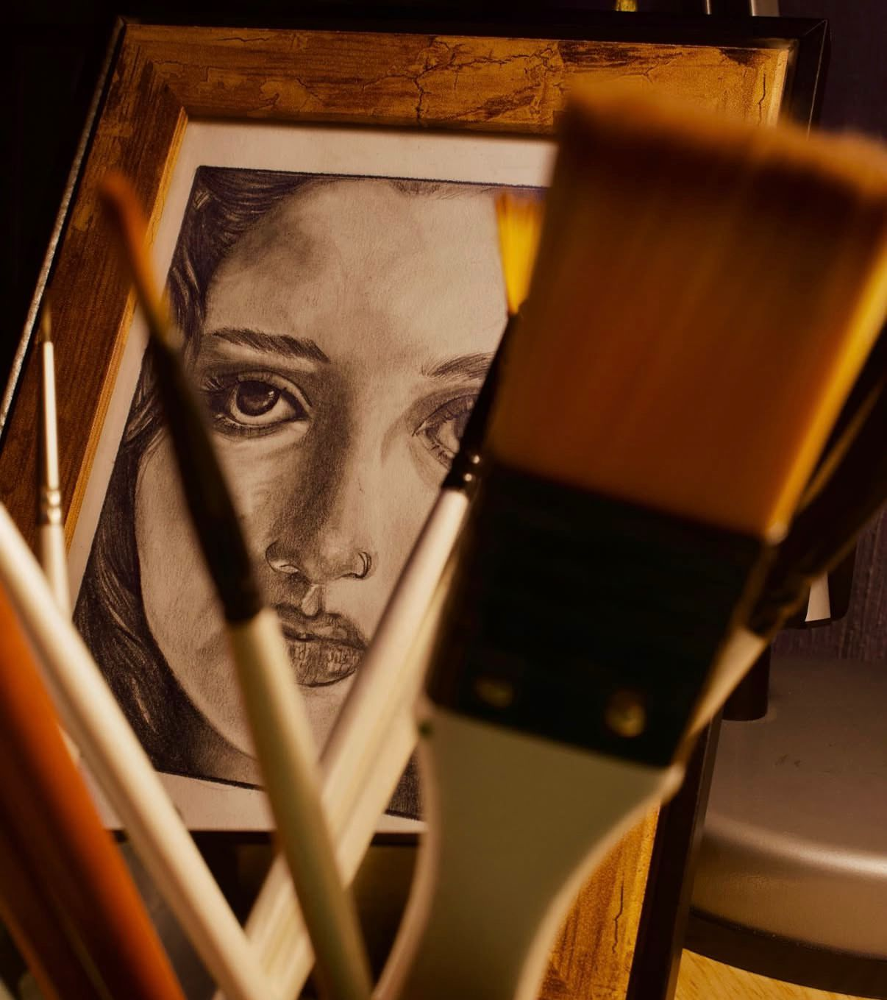
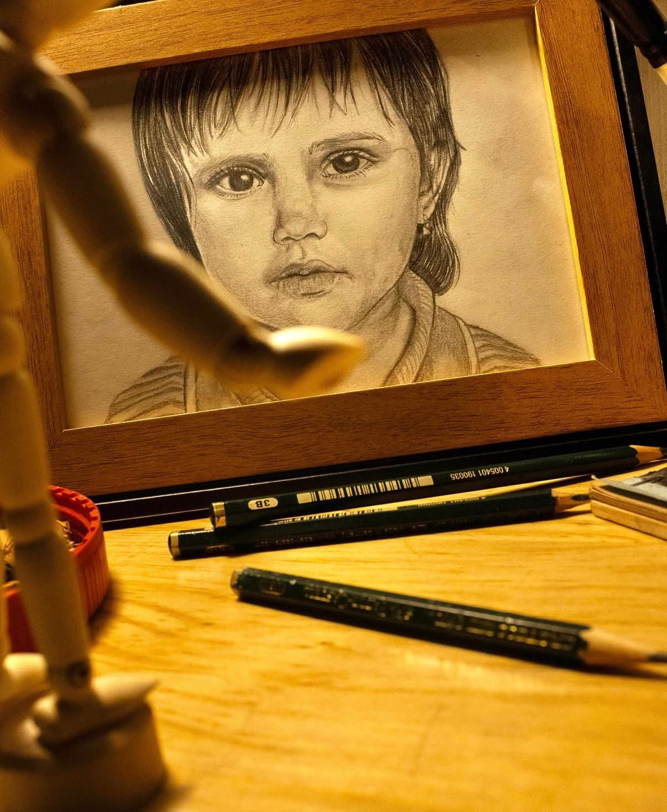
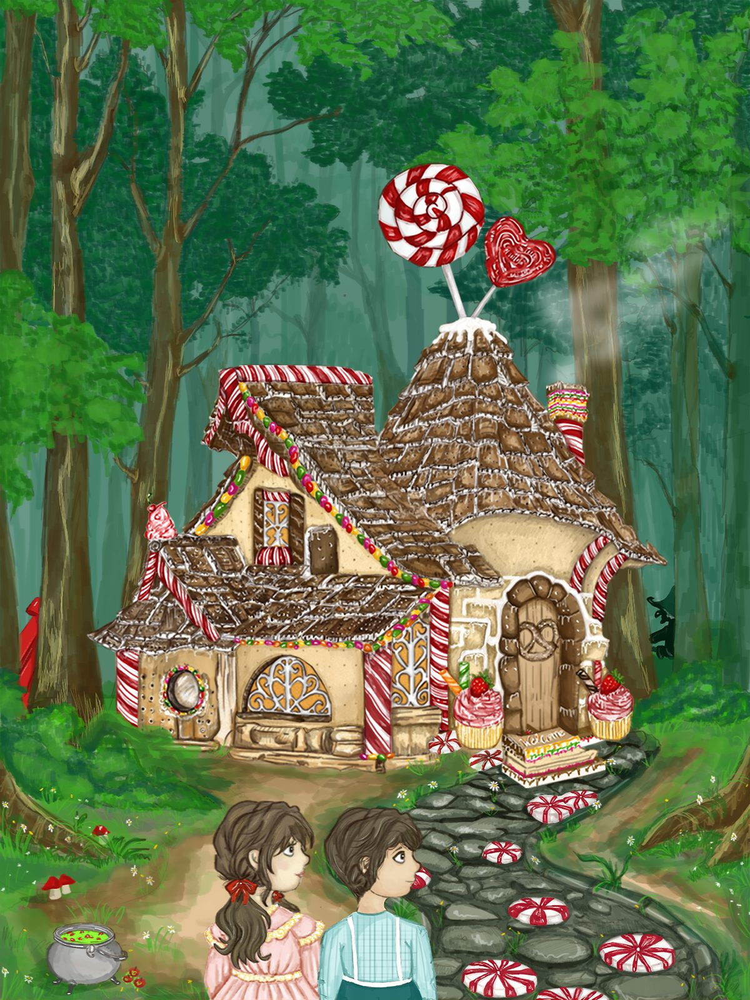
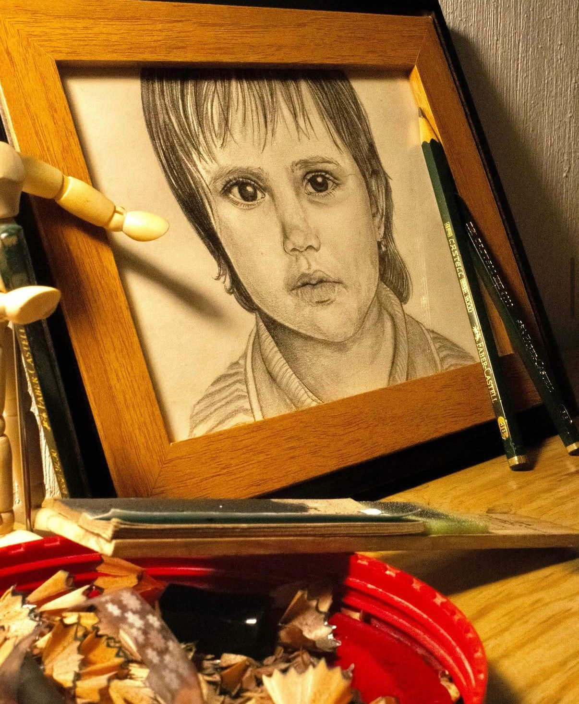
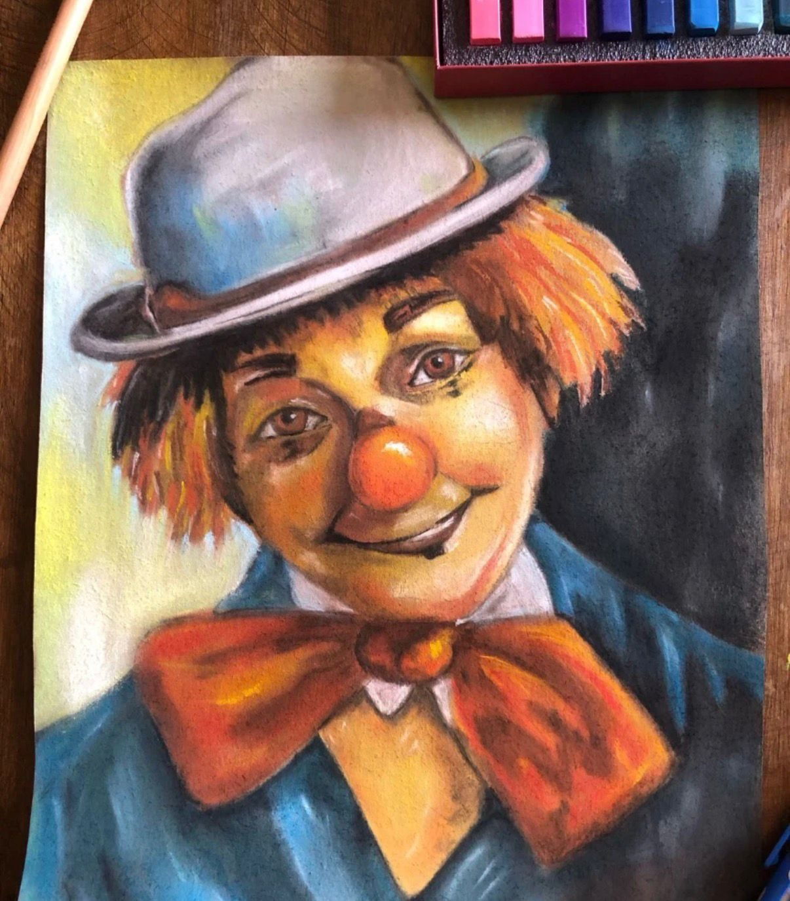
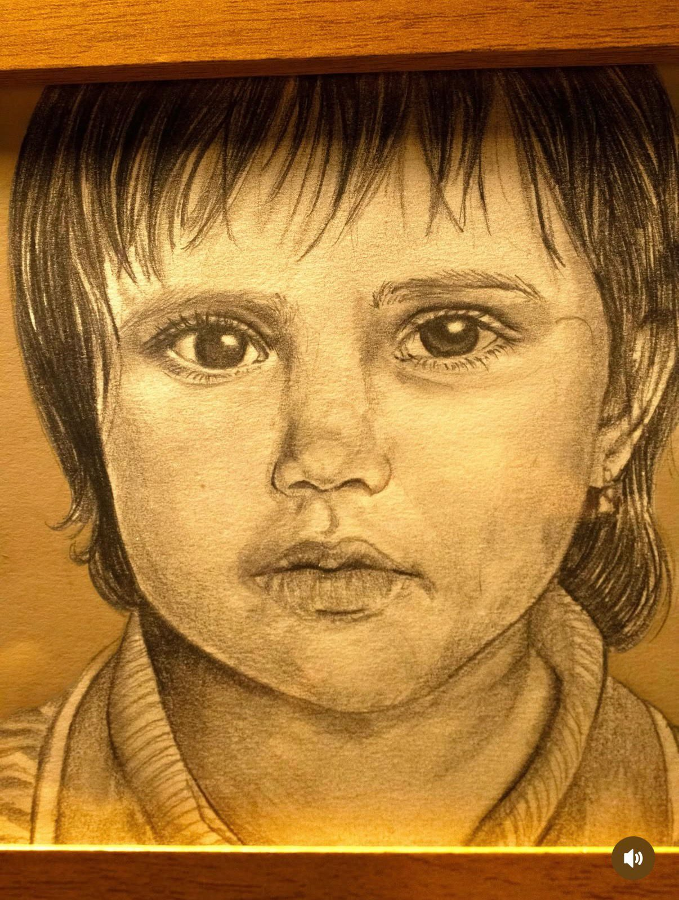
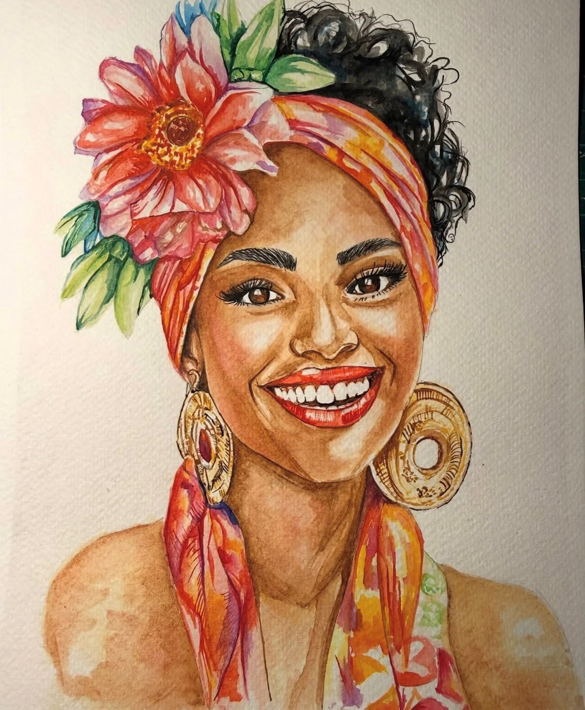
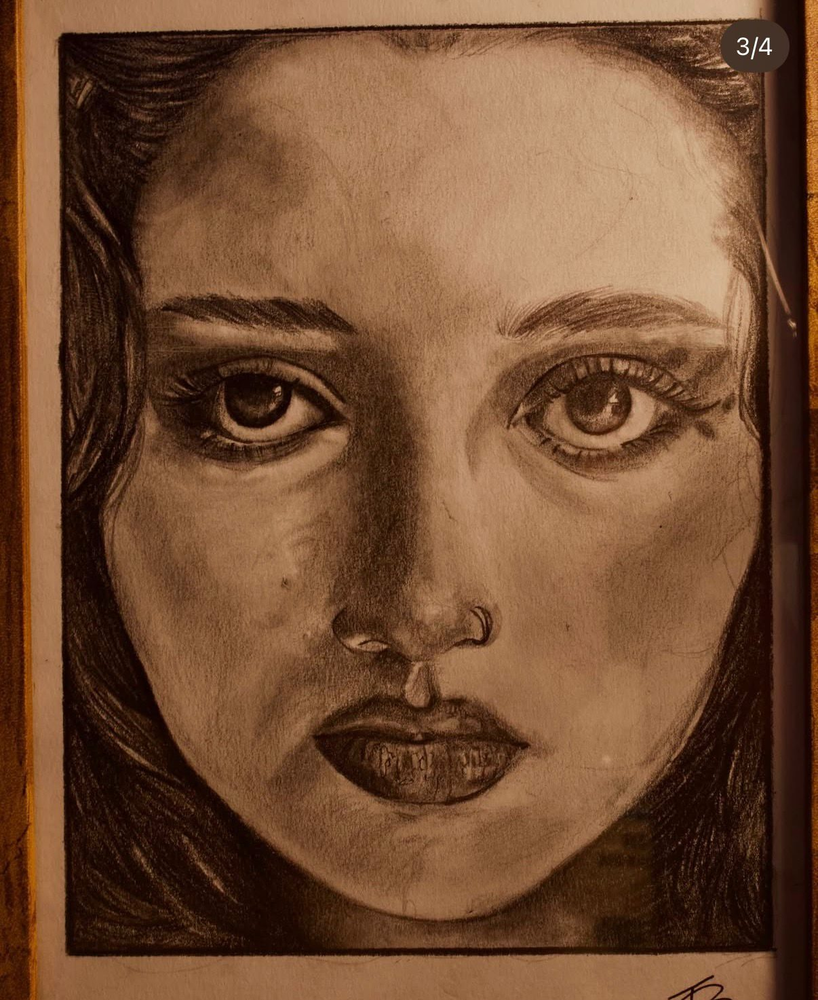

— Portafolio 2026 —
Ilustrador · Retratista · Artista Visual
Creo mundos con lápiz, pigmento y píxel.
Cada trazo es un universo en expansión.
Soy Neftalí Reyes, ilustrador y artista visual guatemalteco con más de 8 años creando retratos expresivos, ilustraciones narrativas y arte digital. Mi trabajo nace de la observación profunda del ser humano: sus emociones, sus historias, su alma.
Domino técnicas tradicionales como el carboncillo, el pastel y la acuarela, complementadas con herramientas digitales para crear obras que fusionan lo clásico con lo contemporáneo. Cada proyecto es un reto creativo que abordo con rigor técnico y libertad expresiva.







Reinterpretación visual de cuentos universales con técnica digital de alta complejidad. "Hansel y Gretel" como pieza insignia de la serie.
Serie de retratos en acuarela que exploran la identidad cultural y la alegría humana. Vibrantes, expresivos y llenos de color tropical.
Exploración del límite entre fotografía y dibujo. Retratos de alto impacto emocional ejecutados exclusivamente con carboncillo y grafito.
Cada línea es una decisión. Cada sombra, una verdad.
Dibujo porque el silencio tiene forma.
Hablemos. Transformemos tu idea en una obra que impacte.